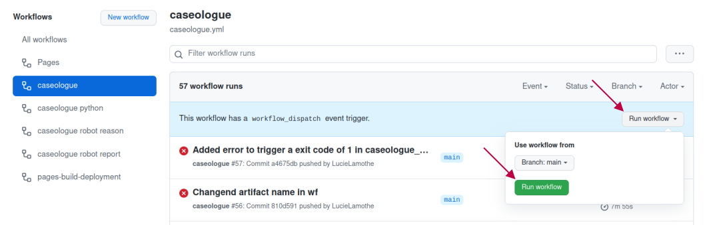
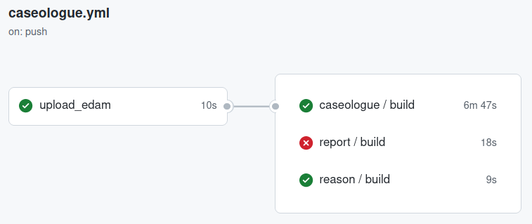

4. Workflows

The caselogue suite is implemented in GitHub Actions to run quality checks at each Pull Requests merge into the main EDAM Ontology repository. It can also be run manually when needed from the caseologue and the main edamontology repositories.
You can test it yourself on the current development version of EDAM clicking this link and click on "Run workflow".
{kind=link}
A reusable workflow is available for each test in the caseologue repository (here).
The caseologue_robot_report, caseologue_robot_reason and caseologue_python workflows all take as input a path to an EDAM.owl file. caseologue_python can also take as input the error level options chosen to run the tool (see caseologue custom python script page)
These reusable workflows can't run on their own, they need to be called by another GitHub Actions yaml file. This "caller" workflow will need to upload the tested EDAM.owl file as an artifact so it can be downloaded and used by the "called" workflow (i.e. caseologue_robot_report, caseologue_robot_reason or caseologue_python).
You can find is an example of a script calling the caseologue suite of tool to run it on the current dev version on EDAM here.
{kind=link}